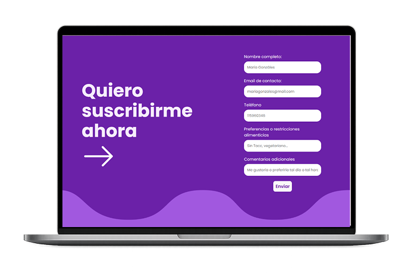
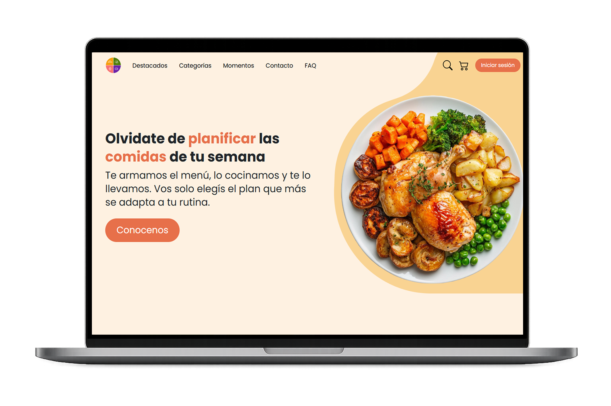
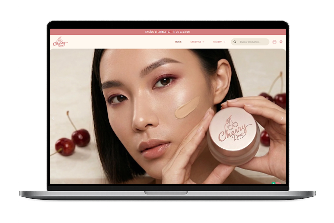
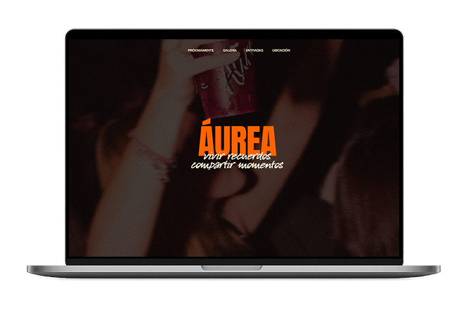
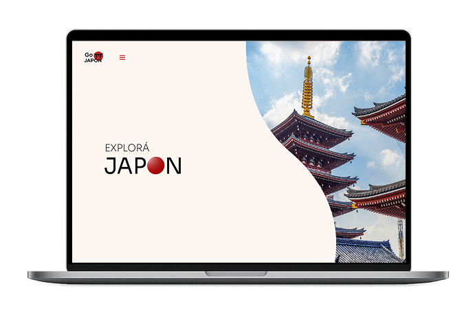
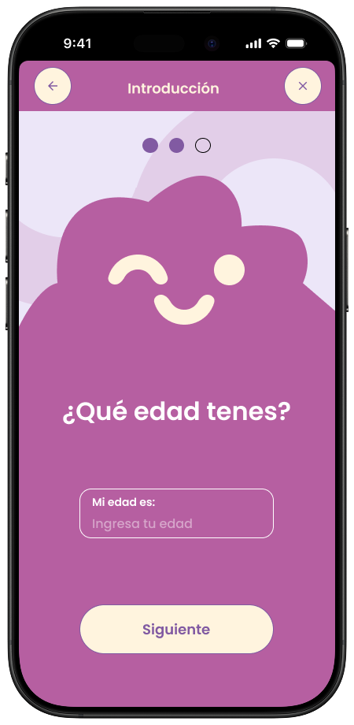
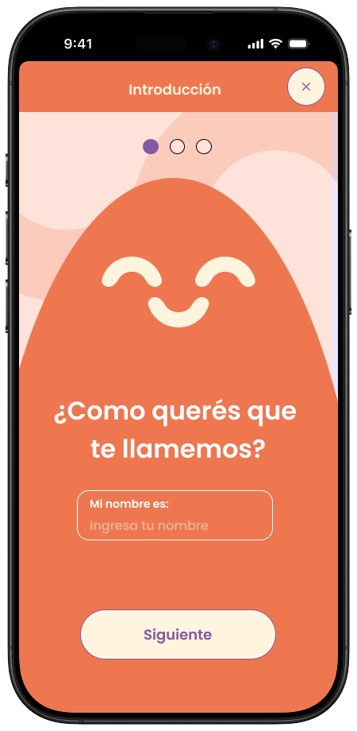
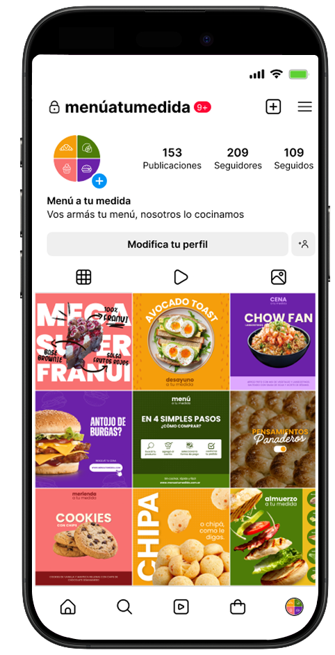

Diseño UX
Investigo, prototipo y testeo para eliminar la fricción entre el usuario y la tecnología, creando experiencias que se sienten naturales y lógicas.
Hola! Soy Juliana Rocha
Investigo, prototipo y testeo para eliminar la fricción entre el usuario y la tecnología, creando experiencias que se sienten naturales y lógicas.
Transformo ideas abstractas en interfaces accesibles, donde cada color y espacio tiene una razón de ser para guiar al usuario intuitivamente.
Traduzco prototipos en código limpio y fiel, asegurando que la visión creativa llegue intacta al navegador sin perder calidad en el camino.










Hola! Mi nombre es Juliana :). Cuento con una base en Artes Digitales, que hoy fusiono con la técnica a través de mi formación en la Tecnicatura Superior en Diseño y Desarrollo Web. Ya certificada como Diseñadora UX/UI y capacitada en Frontend, mi perfil se destaca por unir la sensibilidad estética con la estructura lógica del código.
¿Qué me define? El compromiso con la calidad. Soy rigurosa con mi trabajo y ambiciosa en mis metas; me encanta cuidar esos pequeños detalles que transforman un proyecto correcto en uno memorable.
Creo firmemente que la tecnología sin humanidad no sirve. Por eso, trabajé profundamente en la empatía y la escucha activa, convirtiéndolas en herramientas prácticas para mi día a día. Esta sensibilidad me permite hacer de puente entre el diseño y el desarrollo, traduciendo necesidades creativas a código lógico sin que se pierda la esencia en el camino.
Hoy busco sumarme a un equipo como Desarrolladora Junior, donde pueda aportar esta visión integral, mi compromiso con la calidad y seguir potenciando mis habilidades en un entorno profesional desafiante.

¡Contactame y creémoslo juntos!